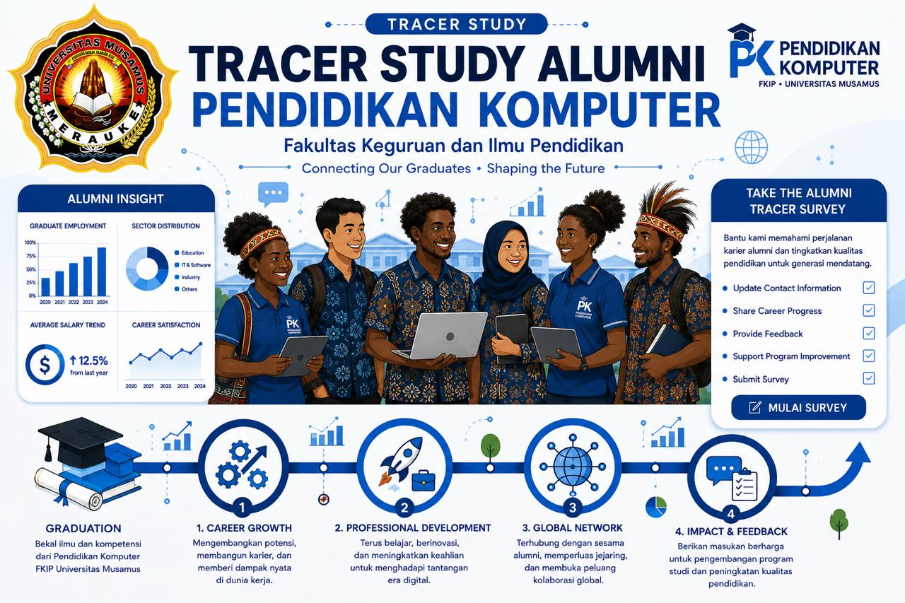

Kuesioner Tracer Study Alumni
Bantu almamater memetakan perjalanan karier lulusan. Isi kuesioner ini dengan jujur — jawaban Anda tersimpan otomatis dan dapat dilanjutkan kapan saja.
✔ Autosave
✔ ± 5 menit
✔ Data aman
